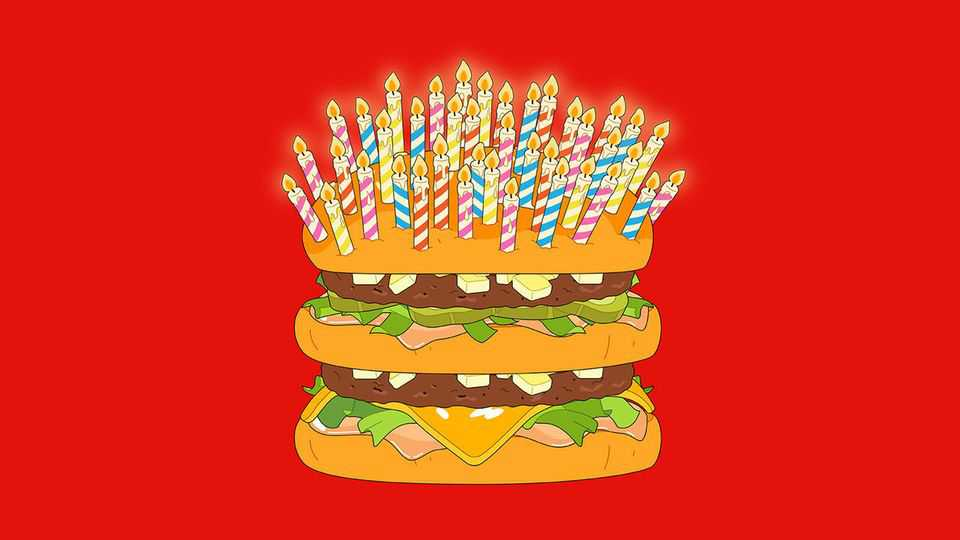
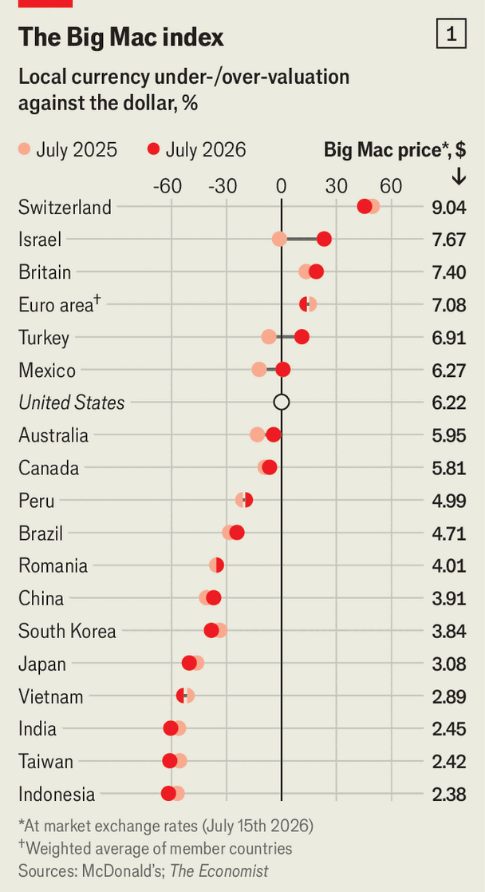
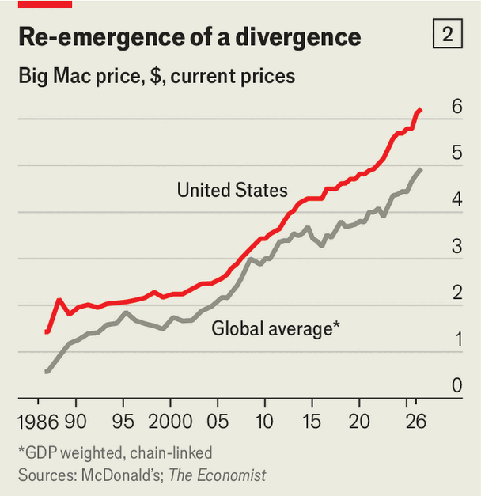
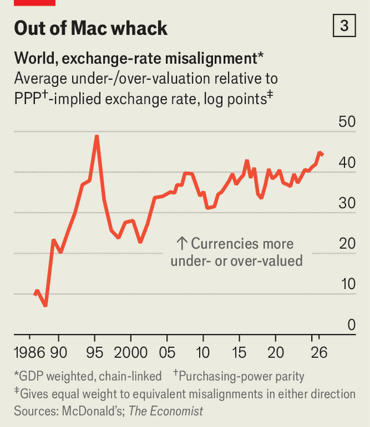
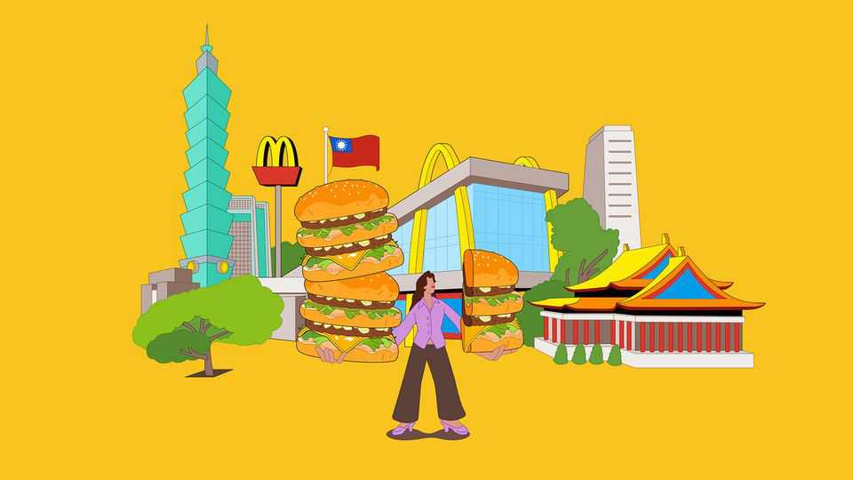

Despite 40 years of our Big Mac index, currencies are still mispriced
Exchange-rate theory can be a lot to digest. Instead, take three trips to McDonald’s

Jul 30th 2026
THE GOD Apollo, his arms wide, beckons five scantily clad muses. The mural, which caused a stir when it first appeared in Basel’s Barfüsserplatz in 1941, is best admired from a McDonald’s housed in a quaint old building on the other side of the tram tracks. It’s a lovely spot in which to enjoy a burger in the sunshine.
But the experience will set you back. A Big Mac costs SFr7.30 in Switzerland or more than $9. You can enjoy the same taste for much less if you are prepared to pop over to Taiwan, a mere 9,500km away. A giant statue of Ronald McDonald used to welcome visitors to the chain’s first outlet in Taipei, the capital city. The prices remain inviting. You can buy a Big Mac for the equivalent of just $2.42.
Why does a Big Mac cost so much more in some countries than in others? Many factors could be at play: tariffs, transport costs, lack of competition. In some countries the Big Mac is a familiar comfort food. In others, it is an exotic treat. In Switzerland strict food rules keep farms small and oblige restaurants to declare the source of their meat and fish. (According to the Herkunftsdeklaration in the Basel outlet, the beef in its Big Macs is a Swiss-Austrian mix.) But pricey burgers can also reveal something interesting about currencies. That thought struck Pam Woodall, our former economics editor, soon after she began writing for us 40 years ago. It was, she says, a “bathtub moment”. The Big Mac has been our muse ever since.
The value of a currency should reflect its purchasing power, its command over goods and services. That is an old idea, formalised by Gustav Cassel, a Swedish economist, around the time of the first world war. The catastrophe had wreaked havoc on the gold standard, which had largely fixed exchange rates by pegging the value of the main currencies to gold. People were slow to grasp, however, that the “ancient bonds” between currencies had been sundered. “The public, with incredible tenacity, sticks to the idea that a krona is still a krona, and a pound a pound, whatever one may do with the currency in question,” Cassel complained. He insisted instead that the value of the Swedish krona or British pound should depend instead on whatever one may do with it. “Our valuation of a foreign currency,” he wrote, “mainly depends on [its] relative purchasing power.”
That power depends on prices. To know whether 1,000 dong, soles or lei is a lot of money or a little, you need to know the price of things in Vietnam, Peru or Romania. Every few years the World Bank leads an effort to collect that kind of information, comparing prices for hundreds of items across the world. The European Union’s own list runs to over 2,000 products. It is a laborious undertaking, one of the biggest statistical initiatives in the world. And doubts remain about whether the goods are truly comparable across countries. Europe’s statisticians once spent half a day arguing about the continent’s many varieties of strawberry jam.
Our approach is simpler. Rather than window shop for thousands of goods, we collect prices on just one: the Big Mac. It is available almost everywhere—in more than 100 countries around the world. It tastes much the same from Basel to Taipei, thanks to the zealous commitment to consistency for which McDonald’s is renowned. It “has the flavour of ‘the perfect universal commodity’”, as Li Lian Ong, a former economist at the IMF, once put it.
We define a currency’s purchasing power as the number of Big Macs it can buy. In America, for example, a single Big Mac can be bought for $6.22. In Switzerland, SFr7.30 is required. Since those two amounts reflect the same purchasing power, it seems reasonable to think you could convert one into the other. The hypothetical exchange rate that would do the trick is SFr1.17 for a dollar. According to the theory of purchasing-power parity, this rate represents the fair value of the two currencies. If the world’s foreign-exchange traders adhered to it, the dollar price of the Big Mac would be the same in both countries and the market value of each currency would match its burger-buying power.

But that is not what usually happens. Actual exchange rates often differ markedly from their Big Mac parities. If a currency is worth less in the markets than Big Mac prices would warrant, our index deems it undervalued. If it is worth more, we consider it overvalued (see chart 1). The Swiss franc is a good example. As anyone who has recently visited the country can testify, a single dollar cannot buy 1.17 Swiss francs at any bureau de change. It cannot even buy one. The actual exchange rate is SFr0.81. That suggests the Swiss franc is disconcertingly expensive. We calculate it is overvalued by 45%.
The misalignment of Taiwan’s currency is even greater, albeit in the opposite direction. In Taiwan a Big Mac costs NT$78. So NT$78 has the same purchasing power as $6.22: both can buy one burger. The exchange rate that would make these two sums equivalent is NT$12.54 to the dollar. But on the currency markets, a solitary dollar can buy you over 32 New Taiwan dollars. We calculate that the Taiwan dollar is undervalued by more than 60%.
Even bigger misvaluations were evident in the first Big Mac index published in 1986. It indicated that France’s currency was overvalued by 73% and Brazil’s was undervalued by an astonishing 87%. That article was “probably…my first memorable piece”, recalls Ms Woodall. It was supposed to be a bit of fun. It was not originally intended as more than a one-off.
Instead the index has continued for 40 years. It has become a fixture of economics textbooks, spawned a cottage industry of academic articles (over 50 by 2023) and racked up over 3,000 citations on Google Scholar. Many variants have been tried or suggested: an index comparing the price of a Starbucks latte in different countries, another tracking IKEA’s Billy bookshelves, a third based on Apple iPods, iPads and iPhones. In 1991 the Union Bank of Switzerland used the Big Mac to compare wages around the world, calculating how long it would take the average worker to earn the price of a burger and fries. (Unbeknown to us, Howard Banks had used the Big Mac to compare earnings around the world in Forbes magazine in 1984.)
Its fame has reached some unusual spots. Ms Woodall remembers climbing to Everest base camp and finding an index update in a copy of The Economist left behind by another mountaineer. “You can’t get away from it. Even at 5,000 metres.” A colleague proudly presented the index to North Korean functionaries on a rare visit to Pyongyang. The country lacks a McDonald’s, but the North Koreans were nonetheless interested in the index’s verdict on the Chinese yuan.
A look back over the index’s life is a reminder that across the span of four decades, currencies—and even countries—can come and go. The original article featured West Germany, which dropped the modifier in 1990. The Soviet Union made a brief appearance after McDonald’s opened a restaurant in Moscow’s Pushkin Square in January 1990. On its first day, it served the Bolshoi Mak and other marvels to over 30,000 people, some of whom had queued for six hours. “In Moscow,” we reported, “fast food comes slow.”
The Soviet Union was replaced by Russia in the index of 1992. Then Russia itself disappeared from the menu 20 years later after its invasion of Ukraine prompted McDonald’s to depart. Yugoslavia dropped out of the index in 1991. It would have been nice if it had stuck around. Its novi dinar, introduced after many parts of the country had broken away, was given the three-letter currency code YUM.
Even when countries remain intact, their currencies sometimes fall apart. The Big Mac index has provided grim snapshots of catastrophic losses of purchasing power. Back in 1986, for example, it took 2.5 cruzeiros to buy the burger in Brazil. By 1993 it required 77,000. The cruzeiro was retired shortly afterwards. Even those crazy prices were later surpassed in Venezuela. In July 2021 a Big Mac cost 16.02m Venezuelan bolívares, the highest number ever recorded in the index.
With the benefit of hindsight, the early indices yield a particular surprise. In the first edition, we asked not whether other currencies were misaligned against the dollar, but whether the dollar was misaligned against them. That was revealing. The index first appeared a year after the Plaza Accord, a concerted effort by America, Britain, France, Germany and Japan to weaken the dollar, which was too strong for comfort. The article was followed a few months later by the Louvre Accord, in which the same countries (plus Canada) tried instead to stabilise the dollar, which had fallen too far too fast. The dollar, in other words, could not be taken for granted as the prime meridian against which other currencies should be judged. It was a problem that America and the rest of the world were trying to resolve.

Currencies are once again moving out of whack. According to the Big Mac index, the world price of burgers (converted into dollars, then averaged across countries, weighted by their GDP) moved closer to the American price in the first decade of this century. But since 2010 it has once again diverged (see chart 2). Recent editions of the index show that currency misalignments in either direction are at their widest since the mid-1990s (see chart 3). American inflation after 2021 is one culprit. The growing prominence of an undervalued Chinese yuan is another. A third contributor is the plunging yen. Incredibly, it is now about 20% cheaper to buy a Big Mac in Japan than in China.
This story is broadly confirmed by the more sophisticated purchasing-power parities calculated by international financial institutions. According to the IMF, for example, the average dollar price of goods and services across countries (again, weighted by the size of their economies) was only 56% of the American price in 2025, the biggest gap in the past 40 years.
The diminished global price may partly reflect the growing economic weight of emerging economies. These countries often look cheap on our index; rich countries tend to be expensive. One reason is productivity gaps within countries. In prosperous parts of the world, a critical mass of tradable industries is highly productive and can thus afford to pay workers high wages. The generous pay bids up the wages of workers even in more sheltered, less productive bits of the economy. These trailing industries pass on the higher labour costs to customers in the form of higher prices. That makes rich countries expensive, relative to poorer ones, where both productivity and wages are low.

To take account of this pattern, we introduced an alternative version of the index in 2011. Adjusted for GDP per person, it assesses whether a country’s currency is more undervalued than you would expect for an economy at its level of development. The Peruvian sol, for example, is 20% undervalued on our raw index, but about fair value on the adjusted version.
No serious economist thinks currencies will ever move by enough to equalise dollar prices across all countries, rich and poor. But they should adjust enough to correct abnormally large misalignments. Recent studies suggest that floating exchange rates largely offset differences in inflation over a span of 5-6 years. Some currency traders might even be tempted to bet on this idea.
But be warned, the predictive record of the Big Mac index is decidedly hit and miss. In 1996 Robert Cumby of Georgetown University tested the index’s predictive powers over the first decade of its existence. He pointed out what is obvious to any faithful reader: many currencies remain overvalued year after year; others are stubbornly cheap. The Taiwan dollar, for example, has not been overvalued by our yardstick in 25 years; the Swiss franc has never been undervalued. But Mr Cumby pointed out that clever traders can take these persistent misalignments into account. They can then look to profit from currencies that are not merely out of whack, but more out of whack than they usually are. Based on such calculations he offered forecasts for 13 currencies. A year later, nine of them had moved in the direction he predicted.

This strategy worked in the early years of the index. It seems less effective over a longer time span. Our attempt to apply Mr Cumby’s method to the same currencies (plus the euro) over the past 40 years yielded less impressive results. The longer period may make it harder to figure out what counts as a “normal” misalignment. A lot can change in 40 years. Some currencies that were once structurally weak or strong may have flipped over the intervening decades. Alternatively perhaps clever traders have already digested Mr Cumby’s work and added his special sauce to their trading strategies. Some of them may even be checking the price of burgers themselves.
The index’s greatest predictive triumph concerned the euro. Many economists had forecast that the new currency would strengthen after its introduction in 1999. But the Big Mac index showed it was 13% overvalued. Soros Fund Management, a big hedge fund owned by George Soros, later admitted that it had considered acting on this sell signal at the time. In the end, however, it chose to ignore our cue, thus missing out when the euro duly tumbled. Mr Soros, as we put it at the time, must have been “cheesed off”.
The Big Mac index invites puns. And our journalists have enthusiastically accepted the offer. Rising currencies are often described as “sizzling”. Weak ones are “undercooked”. The index itself is a “bun-loving guide” to currencies. An article about President Donald Trump’s efforts to punish countries with undervalued exchange rates, said that his threats should be taken with a “pinch of salt”. (A Big Mac contains about 2g.)
In few other articles in The Economist would you get away with so many gags, recalls Ms Woodall. Inventing puns was often the hardest part of the exercise: “We were desperate to think of something new.” And we did not always succeed. Some puns made multiple appearances over the years, and many were a bit “corny”, she admits. But they served a useful purpose. In a world where powerful policymakers are browbeating smaller countries about their exchange rates, the puns help “make sure that people don’t take us too seriously”, she says. “It’s the concept that’s serious, not the actual numbers.” ■